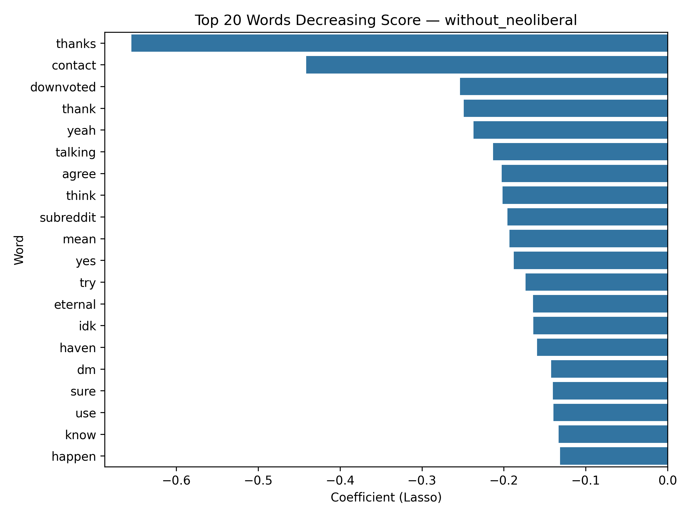
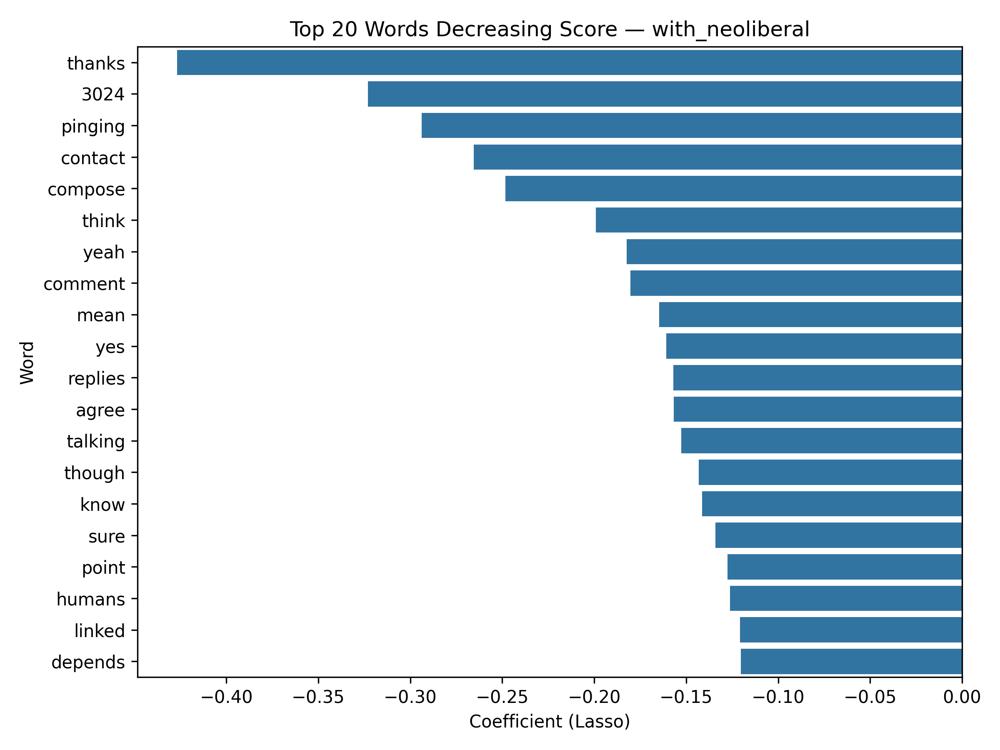
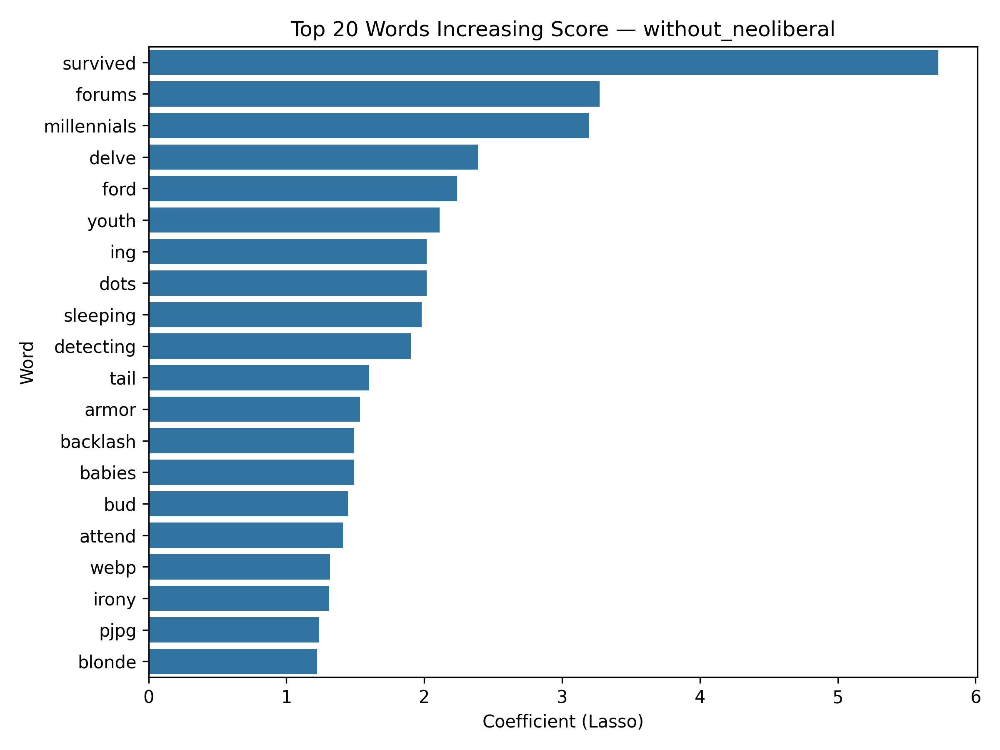
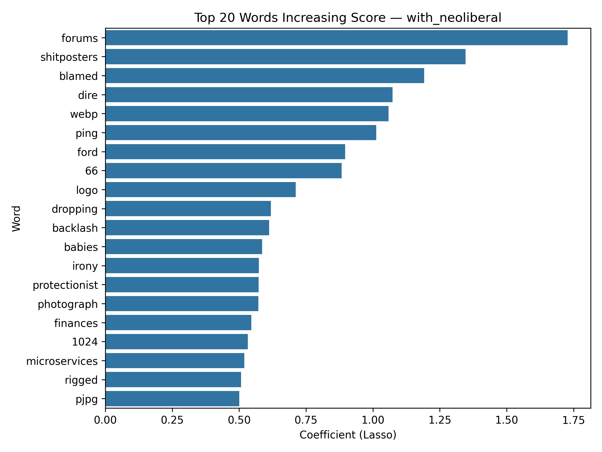
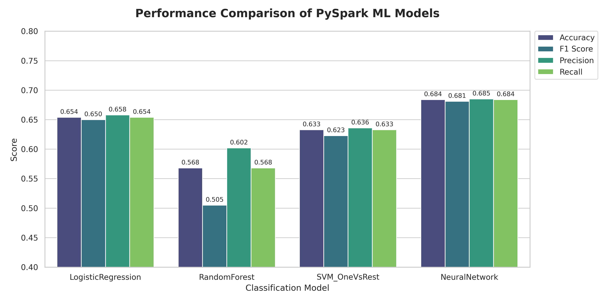

Machine Learning
Predictive Models and Classification
ImportantMilestone 3 Deliverable
This page is populated during Milestone 3 (Week 6) with ML findings.
Overview
This page presents machine learning models addressing [2-3] ML business questions through classification, regression, or clustering.
Business Question 1: Score prediction
Question: Can we predict the comment score of a new AI-related post?
Problem Formulation
- Task Type: Regression
- Target Variable: Score
- Evaluation Metric:
- Root Mean Squared Error (RMSE)
- Mean Absolute Error (MAE)
- R-squared (R²)
Feature Engineering
Features Used:
- Text-based features (TF–IDF):
- Lowercased comment text is tokenized with a RegexTokenizer and cleaned with a StopWordsRemover that removes both standard English stopwords and URL/media tokens (e.g.,
http,https,www,jpg,gif,video,youtube). - Cleaned tokens are converted into a term-frequency vector with CountVectorizer (
tf_features), then transformed into a TF–IDF representation (tfidf_features) via IDF. - Because this model is Lasso Regression, each word receives a coefficient — meaning we can quantify which words increase or decrease the predicted score of a post.
- Positive weight = higher comment score contribution
- Negative weight = lower score association
- Lowercased comment text is tokenized with a RegexTokenizer and cleaned with a StopWordsRemover that removes both standard English stopwords and URL/media tokens (e.g.,
- Topic-based features (LDA topic distribution):
- An LDA model trained in a separate NLP pipeline provides a
topicDistributionvector for each comment. - This vector encodes how strongly each comment loads onto different latent topics (e.g., model performance, policy discussions, ethical concerns).
- An LDA model trained in a separate NLP pipeline provides a
- Metadata features:
- From the
created_utctimestamp, we derive:day_of_week(day of week of the comment),hour(hour of day when the comment was posted).
- We also include
text_length(character length of the comment) as a simple measure of verbosity. - These metadata features are combined with TF–IDF and topic features using a VectorAssembler to form the final
featuresvector.
- From the
Model Performance
| feature_name | without_neoliberal | with_neoliberal |
|---|---|---|
| day_of_week | 0.0 | 0.0 |
| hour | 0.02008788219251471 | 0.0 |
| text_length | -0.0026749511463122913 | 0.0 |
Top 20 words decreasing Score

Top 20 words Increasing Score


Results:
Lasso Regression (regParam: 0.10)
- RMSE: 40.8557
- MAE: 9.7979
- R²: -0.0507
Lasso Regression (regParam: 0.05)
- RMSE: 41.1928
- MAE: 10.5317
- R²: -0.0681
Lasso Regression (regParam:0.20)
- RMSE: 40.5023
- MAE: 8.9947
- R²: -0.0326
Gradient Boosted Trees
- RMSE: 19.2511
- MAE: 6.0207
- R²: -0.0261
Business Question 3: Topic Classification (Multi-class)
Question: Can we classify Reddit posts into AI topic categories (Text AI, Creative AI, Research/Tech, Other)?
Problem Formulation
- Task Type: Multi-class Classification
- Target Variable: ai_category
- Categories:
- Text AI: Posts from subreddits like ChatGPT, OpenAI, ClaudeAI, GPT4, LocalLLaMA
- Creative AI: Posts from subreddits like StableDiffusion
- Research/Tech: Posts from subreddits like MachineLearning, DataScience, ComputerScience, Programming, Singularity, Futurology
- Other: All remaining posts (including non-AI subreddits like AskReddit, Neoliberal)
- Evaluation Metric: Accuracy, F1 Score, Precision, Recall (weighted for multi-class)
Model Performance
| Model | Accuracy | F1 Score | Precision | Recall |
|---|---|---|---|---|
| Neural Network | 0.6842 | 0.6820 | 0.6856 | 0.6842 |
| Logistic Regression | 0.6544 | 0.6507 | 0.6590 | 0.6544 |
| SVM (OneVsRest) | 0.6336 | 0.6239 | 0.6367 | 0.6336 |
| Random Forest | 0.5681 | 0.5057 | 0.6030 | 0.5681 |

Feature Engineering
Features Used:
- Text-based features (TF-IDF):
- Combined title and selftext are tokenized and processed to remove URLs and basic noise.
- Text is transformed into TF-IDF features using HashingTF (1000 features) and IDF transformation.
- This captures word-level patterns that distinguish different AI topic categories.
- Numerical/Metadata features:
text_length: Character length of processed textword_count: Number of words in the posthour_of_day: Hour when the post was created (fromcreated_utctimestamp)has_url: Binary indicator if the post contains a URLscore: Post score (engagement metric)num_comments: Number of comments on the post
- Data Balancing Strategy:
- Smart sampling applied to handle class imbalance:
- Downsampled ‘Other’ category to ~25,000 samples (reducing from 90%+ of data)
- Upsampled ‘Creative AI’ category to ~12,000 samples (addressing minority class)
- This balancing strategy improves model performance on minority AI categories while maintaining representation of the majority class.
- Smart sampling applied to handle class imbalance:
- Feature Assembly:
- All features (TF-IDF vectors + numerical features) are combined using VectorAssembler
- Features are standardized using StandardScaler (withStd=True, withMean=False)
- Final feature vector is used for all classification models
Model Architecture Details
- Logistic Regression: Multi-class classification with maxIter=50
- Random Forest: 50 trees, maxDepth=10, seed=42
- SVM (OneVsRest): LinearSVC wrapped with OneVsRest for multi-class support (maxIter=10)
- Neural Network (MLP): Deep architecture with layers [input_dim, 128, 64, num_classes], maxIter=100
Key Findings
The Neural Network model achieved the best performance across all metrics (Accuracy: 68.4%, F1: 68.2%), demonstrating that deep learning architectures can effectively capture complex patterns in text and metadata for topic classification. Logistic Regression and SVM performed similarly (mid-60s accuracy), while Random Forest showed lower performance, particularly in F1 score (50.6%), suggesting it may struggle with the high-dimensional TF-IDF features.
The smart sampling strategy successfully addressed class imbalance, allowing models to learn meaningful patterns across all four categories rather than being dominated by the “Other” category. This approach is particularly important for practical applications where distinguishing between specific AI tool categories (Text AI, Creative AI, Research/Tech) is more valuable than simply identifying AI-related content.
Summary
Answers to ML Business Questions
- Can we predict the comment score of new AI-related posts?
Regression models for score prediction achieved moderate performance. Gradient Boosted Trees performed best (RMSE: 19.25, MAE: 6.02, R²: -0.03), followed by Lasso Regression variants (RMSE: 40-41, MAE: 9-10). Negative R² values indicate that predicting exact scores remains challenging, likely due to Reddit’s complex engagement dynamics involving timing, community context, thread momentum, and algorithmic factors beyond textual features. Feature analysis revealed that TF-IDF features carry the most predictive power, with specific words showing consistent positive or negative associations with scores. Metadata features (hour, day of week) showed minimal predictive value, while topic distributions from LDA provided moderate improvement. The analysis suggests that content quality and relevance matter more than posting timing for engagement.
- Can we predict whether an AI-related post will go viral?
Binary classification for viral prediction demonstrated stronger performance than score regression. Using a threshold of score > 9, models achieved: ROC-AUC of 0.67, PR-AUC of 0.30 (with neoliberal) / 0.19 (without), Accuracy of 83.5% (with) / 88.3% (without), and F1 scores of 0.76 (with) / 0.83 (without). The without-neoliberal model performed better due to reduced noise from politically-focused content. Logistic regression coefficients revealed linguistic markers of viral content. Words associated with higher virality include specific technical terms, actionable advice, and surprising insights. Words associated with lower engagement include vague expressions, complaint-focused language, and overly general statements. The model demonstrates that viral prediction is more tractable than exact score prediction, as it captures threshold-crossing patterns rather than granular engagement levels.
- Can we classify Reddit posts into AI topic categories?
Multi-class topic classification achieved strong performance, with the Neural Network model leading at 68.4% accuracy and 68.2% F1 score. A smart sampling strategy was critical for success—downsampling the dominant “Other” category (from 90%+ to ~25k samples) and upsampling the minority “Creative AI” category (to ~12k samples) allowed models to learn meaningful patterns across all categories. The Neural Network’s deep architecture (128→64→output) effectively captured complex text and metadata patterns, outperforming Logistic Regression (65.4%), SVM with OneVsRest (63.4%), and Random Forest (56.8%). This demonstrates that topic classification is more tractable than exact score prediction, as it focuses on categorical distinctions rather than continuous engagement metrics.
Business Implications
[How models can be applied in practice]
Tip
All ML code is in code/ml/ directory. Models saved in code/ml/models/.